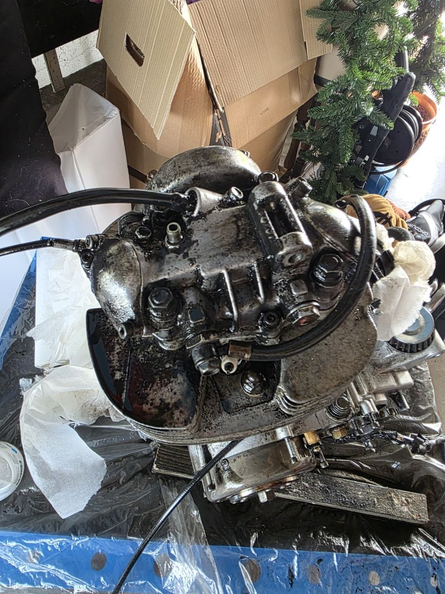
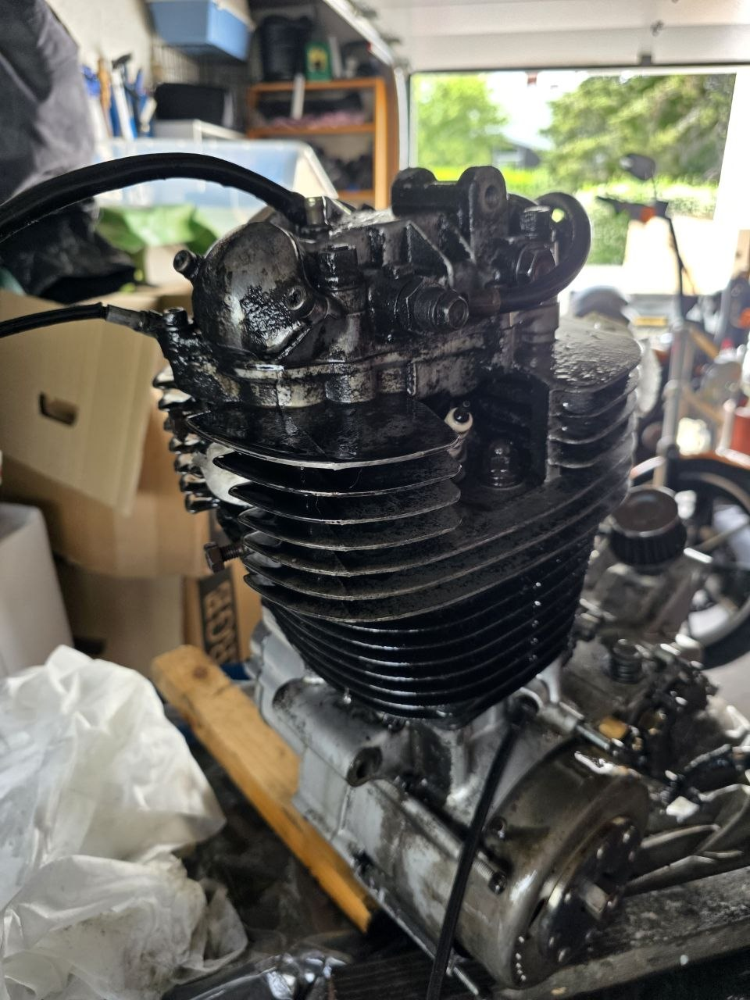
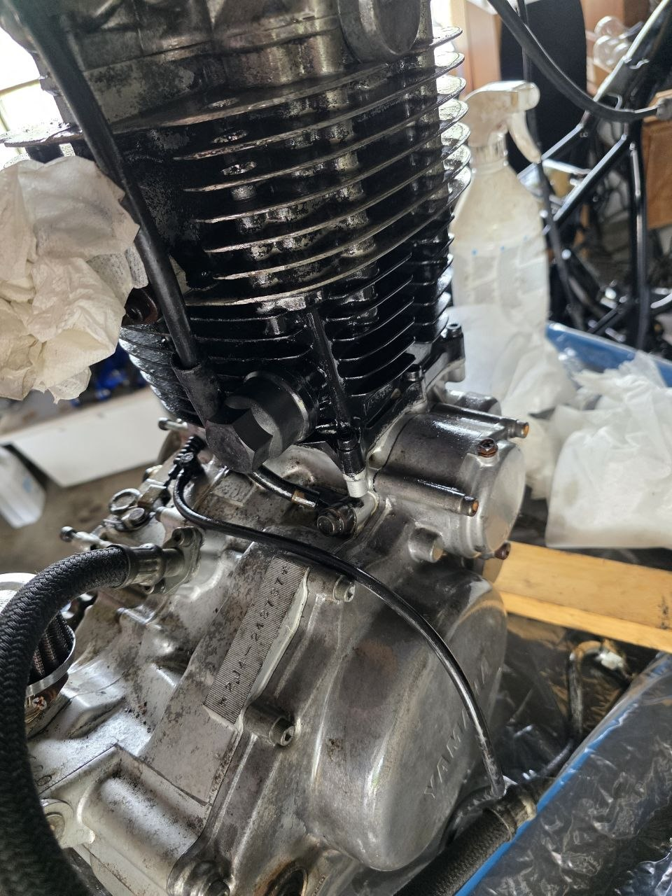
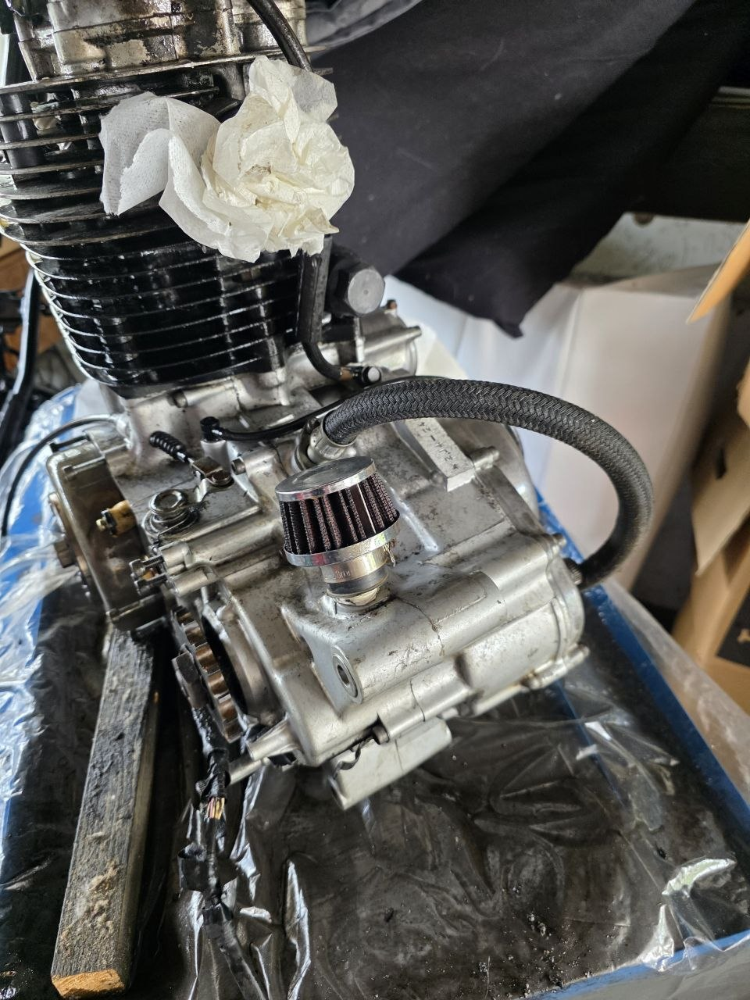
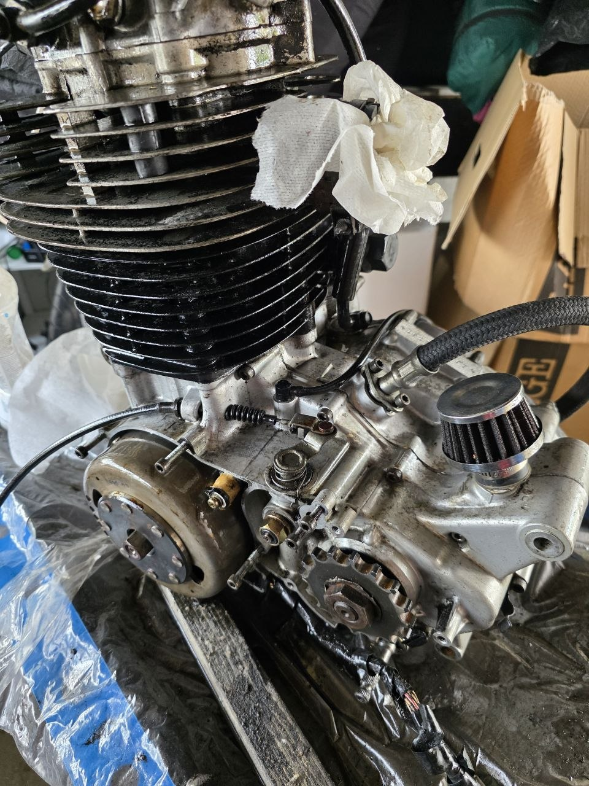

🧼 Motorrengjøring og lakkering av styrekroner
I dag har det skjedd ting på flere fronter. Motoren har endelig fått seg en real omgang med avfetting og børsting — noe den så sårt trengte etter 45 år på veien. I tillegg har styrekronene fått første strøk med lakk!
🧼 Motorrengjøring — drit og grime fra 1981
Motoren har sett bedre dager. Oljegrime, veistøv og generell slamp har bygget seg opp i årtier. Tror ikke denne motoren har vært vasket siden den rullet ut av Yamaha-fabrikken i 1981!

Overflaten var dekket av et tykt lag med gammel olje og smuss. Kjøleribbene på sylinderen var helt tettpakket. Her var det bare å brette opp ermene.

Spesielt rundt bunnpanna og på undersiden av motoren var det mye fett og olje som hadde festet seg. Heldigvis ser det ikke ut til å være noen aktive lekkasjer — det meste er gammel drit som har samlet seg opp.

Verkstedbenken har fått kjørt seg. Avfettingsspray, tannbørster og masse tørkepapir ble første runde. I morgen blir det dampvask med Karcher for å få bort det siste mellom ribbene og i kriker og kroker.

Planen er å få motoren skikkelig ren uten å måtte skille den — ingen klyving av motor eller toppdemontasje. SR500 har god klaring i ramma, så det går fint å få den inn igjen som en hel blokk.

🎨 Styrekroner — sandblåst og lakkert
Styrekronene ble sandblåst for noen dager siden, og i dag fikk de første strøk med grunning og lakk.
Resultatet ser veldig bra ut! Overflaten er jevn og fin, og lakken har lagt seg pent. Bildene kommer når delene er helt ferdige og montert.
🔜 Neste steg
- Dampvask av motoren i morgen 💨
- Ferdiglakkere styrekroner (trenger flere strøk)
- Planlegge videre motorarbeid
- Ramma er klar — forstillingen skal monteres
Det går fremover! 🔧🏍️